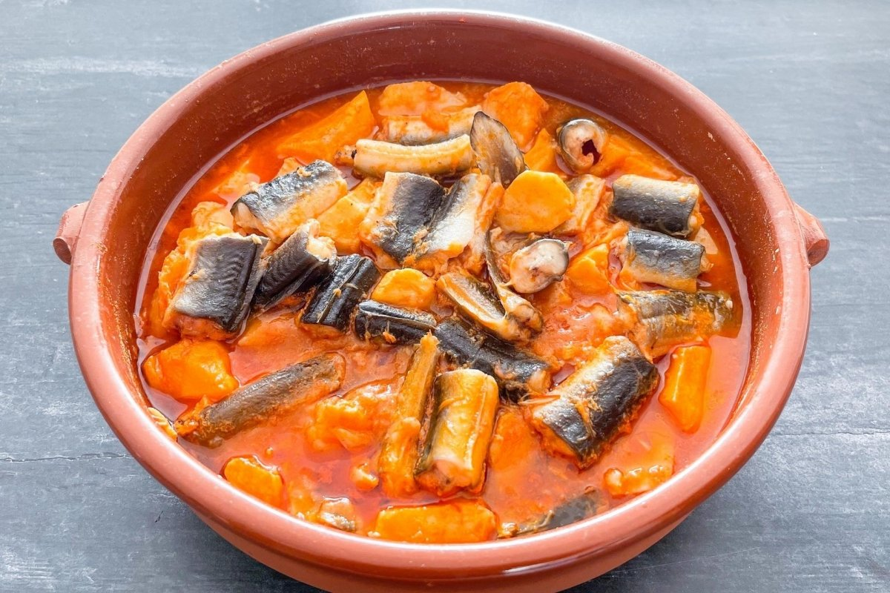
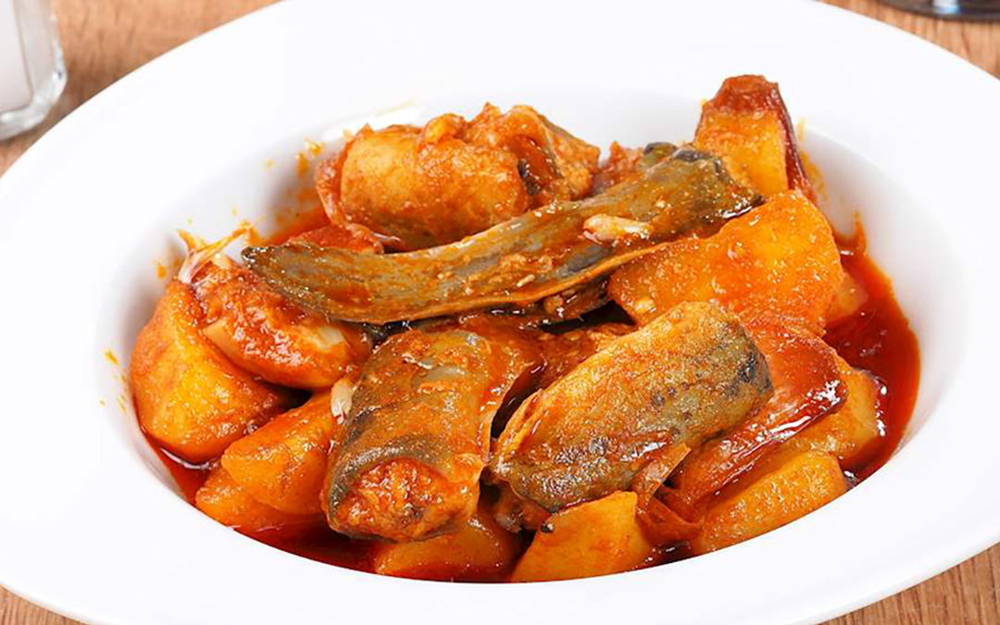
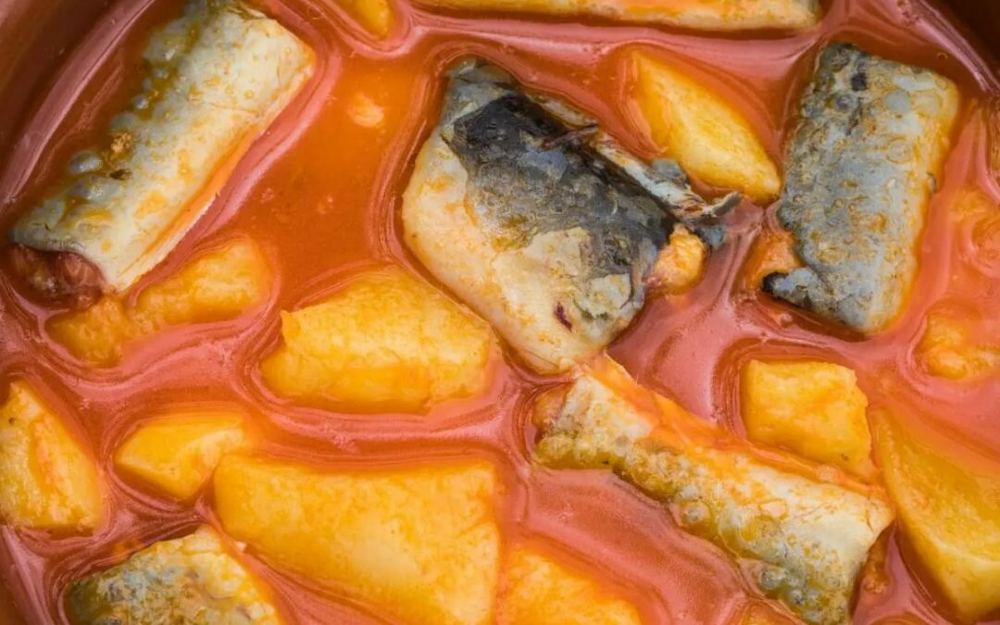
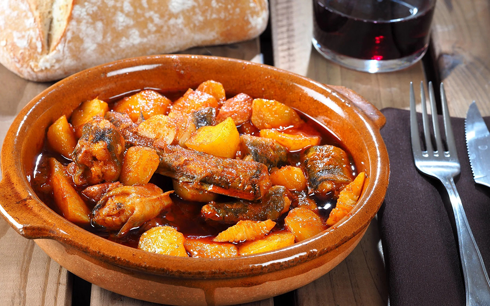

All i pebre
El all i pebre es un guiso tradicional valenciano, especialmente vinculado a la zona de la Albufera, donde ha formado parte de la cocina popular durante generaciones.

Origen
Este plato tiene su origen en la cocina humilde de los pescadores de la Albufera, que aprovechaban la anguila como ingrediente principal.
Su nombre hace referencia directa a dos de sus ingredientes básicos: el ajo (all) y el pimentón (pebre).
Ingredientes principales
- Anguila
- Patata
- Ajo
- Pimentón
- Aceite de oliva
- Guindilla (opcional)
- Caldo o agua
Elaboración
- Preparar un sofrito con ajo y pimentón.
- Añadir las patatas y rehogar.
- Incorporar la anguila troceada.
- Cubrir con agua o caldo.
- Cocer hasta que las patatas estén tiernas.
Galería



Vídeo
Conclusión
El all i pebre representa una cocina de origen humilde que ha sabido mantenerse como una de las elaboraciones más características del recetario valenciano.